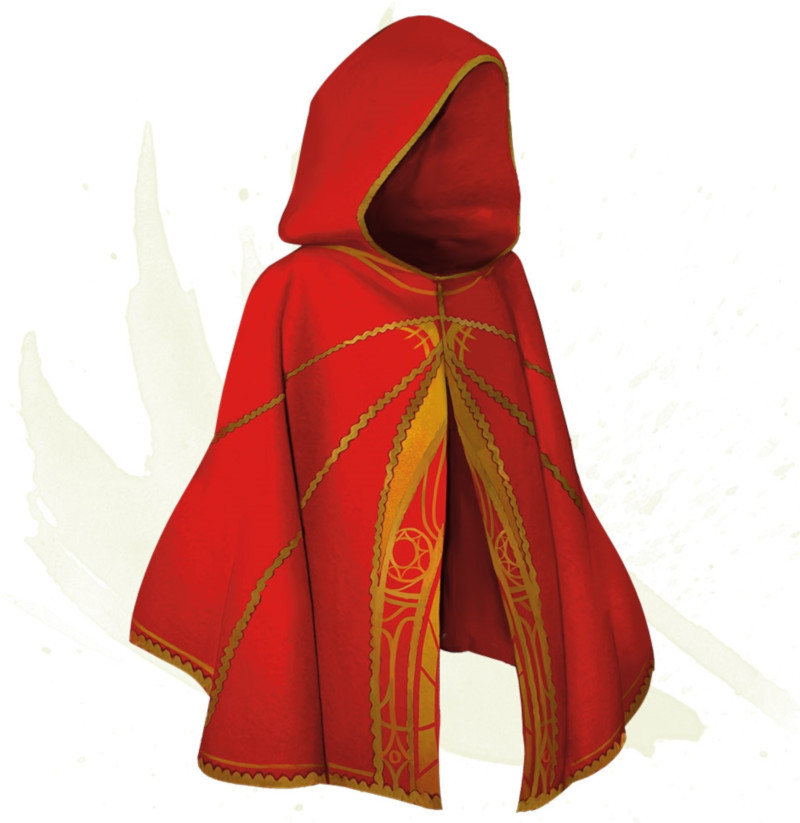

Cape du prestidigitateur
[ Cape of the Mountebank ] [ Cape de prestidigitateur ]
Objet merveilleux, rare
Cette cape sent légèrement le soufre. Tant que vous en êtes équipé, vous pouvez vous en servir, en utilisant votre action, pour lancer le sort porte dimensionnelle. Cette propriété de la cape ne peut être réutilisée avant le prochain lever de soleil. Lorsque vous disparaissez, vous laissez derrière vous un nuage de fumée, et, à votre arrivée à destination, vous apparaissez également dans un nuage de fumée. La fumée obscurcit légèrement l'endroit que vous quittez et celui où vous apparaissez, et se dissipe à la fin de votre tour suivant. Un vent léger ou plus puissant disperse la fumée.
Dungeon Master´s Guide (SRD)
